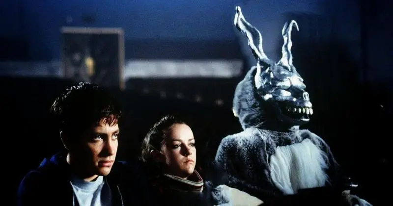
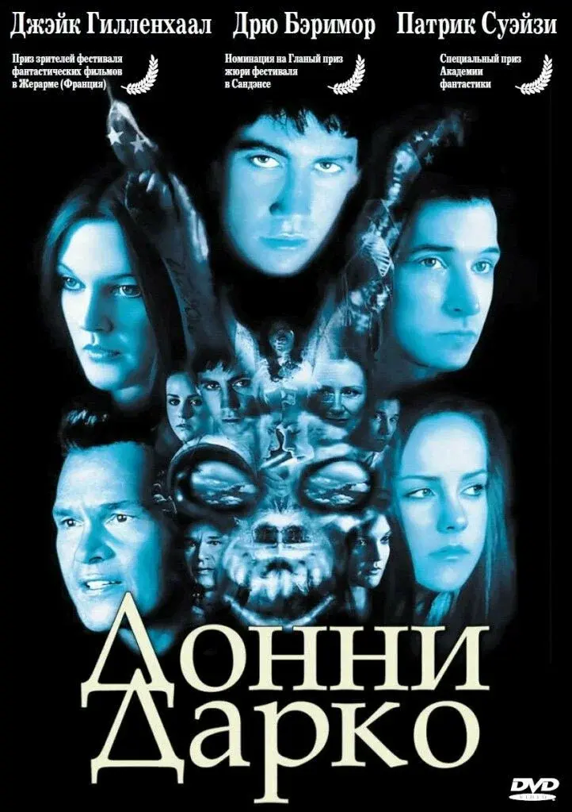
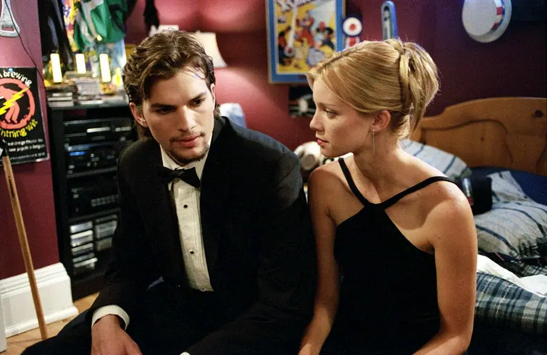
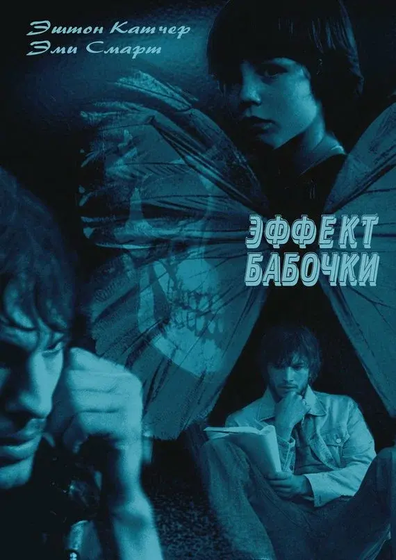
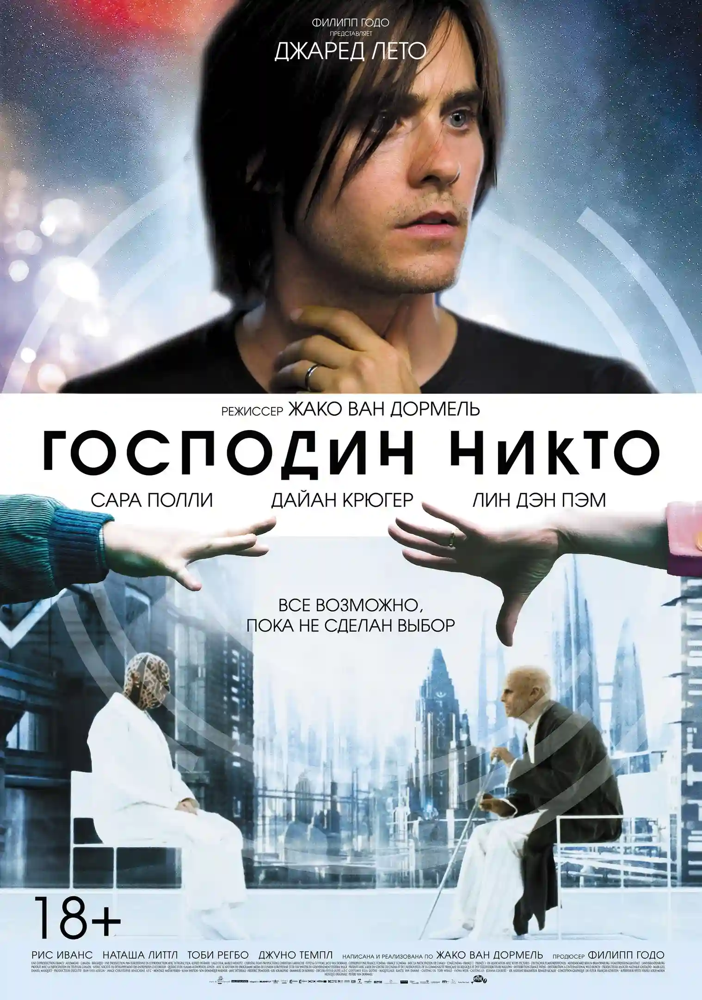
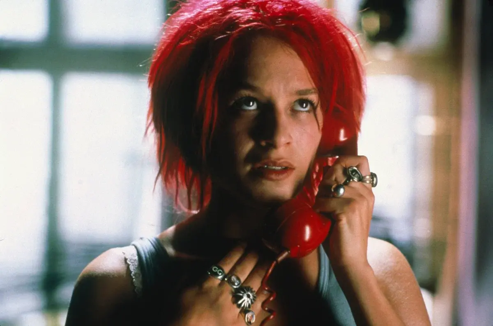
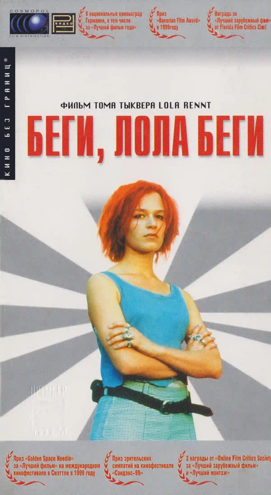
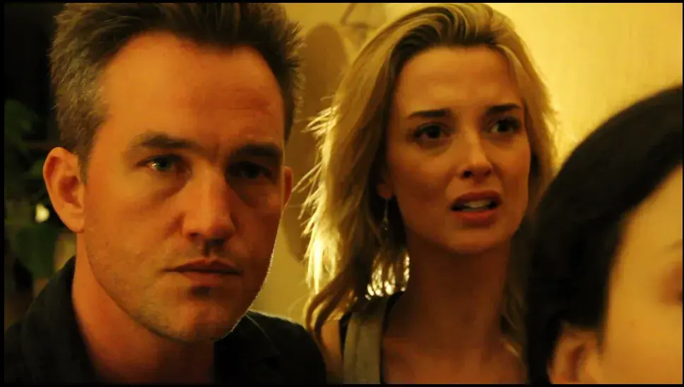
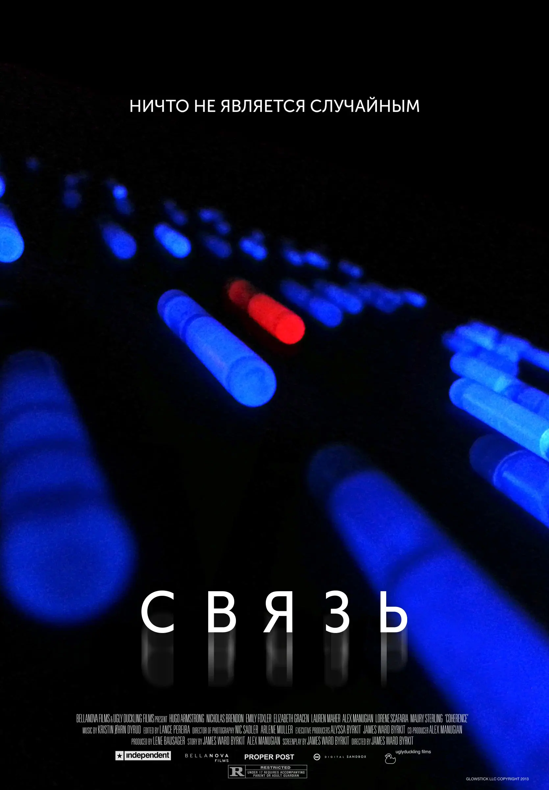

Жизнь как сценарий
5 фильмов, где одна секунда меняет все
Мы привыкли думать, что жизнь - это результат долгого планирования и осознанных решений. Но иногда все рушится или, наоборот, обретает новый смысл из-за одного единственного мгновения. В рубрике “Жизнь как сценарий” мы собрали для вас 5 захватывающих фильмов, где крошечный эпизод или доля секунды кардинально меняют судьбы героев, а иногда и весь ход истории.
-
1.донни дарко


Донни Дарко
Donnie Darko
7.9 2001 Детектив, драма, фантастика США
Длительность: 2 ч 13 мин
Режиссер: Ричард Келли
Actors: Джейк Джилленхол, Дена Мэлоун, Мэгги Джилленхол
К своим 16 годам старшеклассник Донни уже знает, что такое смерть. После несчастного случая, едва не стоившего ему жизни, Донни открывает в себе способности изменять время и судьбу. Перемены, случившиеся с ним, пугают всех, кто его окружает – родителей, сестер, учителей, друзей, любимую девушку. Научившись путешествовать в другие вселенные, Донни пытается приспособиться к тому, что теперь любые, даже самые незначительные его поступки вызывают потрясения космических масштабов… «Донни Дарко» — это не просто фантастика, а глубокая философская притча о взрослении, судьбе, жертвенности, одиночестве и поиске смысла. Фильм рассматривает тему подросткового бунта, потери идентичности и стремления к самореализации. Временная петля и параллельная вселенная — художественный способ показать внутреннюю борьбу героя.
Культовый фильм, который не теряет своей загадочности и спустя годы. Подростка Донни будит жуткий кролик и уводит на поле для гольфа, тем самым спасая от падающего на его дом авиадвигателя. Это случайное спасение запускает обратный отсчет до конца света и череду событий, в которых переплетаются философия, психология и фантастика. Идеальный пример того, как одно событие меняет не только жизнь героя, но и саму ткань реальности...
-
2.эффект бабочки


Эффект бабочки
The Butterfly Effect
8.2 2003 Фантастика, триллер, драма США, Канада
Длительность: 1 ч 53 мин
Режиссеры: Эрик Бресс, Дж. Макки Грубер
Актеры: Эштон Кутчер, Эми Смарт, Элден Хенсон, Уильям Ли Скотт
Фильм, давший название самому принципу. Студент Эван обнаруживает, что может возвращаться в прошлое через свои дневники и менять травмирующие события. Но благие намерения оборачиваются кошмаром: каждое, даже самое маленькое изменение в прошлом приводит к чудовищным последствиям в настоящем. Жесткая и бескомпромиссная история о цене вмешательства в судьбу. Картина затрагивает темы невозможности контроля над судьбой, того, как ошибки формируют личность, а попытки их «исправить» ведут к непредсказуемым последствиям. Финал акцентирует идею жертвенности — иногда отказ от желаемого — единственный способ сохранить порядок. Фильм заставляет задуматься о ценности прошлого, настоящем и необратимости некоторых событий.
Для Эштона Кутчера эта роль стала значимым этапом в карьере — он впервые сыграл в некомедийном фильме. Некоторые зрители отмечают, что актёр изучил теорию хаоса, психологию и душевные травмы, что отразилось на его игре. Эми Смарт и другие актёры также получили положительные отзывы за работу.
-
3.господин никто


Господин Никто
Mr. Nobody
7.9 2009 Фантастика, фэнтези, drama Бельгия, Германия, США
Длительность: 2 ч 18 мин
Режиссер: Жако Ван Дормел
Актеры: Джаред Лето, Сара Полли, Дайан Крюгер, Фам Линь Дан
Философская драма о 118-летнем Немо, последнем смертном на Земле. Фильм разворачивает перед зрителем веер его возможных судеб, берущих начало в одном детском решении на перроне: уехать с мамой или остаться с отцом. Один из самых красивых и многогранных фильмов о том, что любая мелочь имеет значение, а жизнь состоит из бесконечного числа непрожитых вариантов.
Картина исследует тему выбора и его последствий, задавая вопросы о смысле жизни, свободе воли, предопределённости и ценности каждого жизненного опыта. Главная идея фильма — не существует «неправильного» выбора, так как каждый путь формирует уникальную реальность. Он напоминает, что жизнь — это не линия, а бесконечный веер возможностей, где даже самые маленькие решения меняют всё. «Господин Никто» — это не просто история одного человека, а размышление о жизни в целом. Фильм напоминает, что важно не зацикливаться на идее «правильного пути», а ценить сам процесс движения, ошибки, случайности и неожиданные встречи. Метафоры вроде «эффекта бабочки» (когда мельчайшее изменение может привести к глобальным последствиям) и концепции мультивселенной добавляют глубины повествованию.
-
4.беги, лола, беги


Беги, Лола, беги
Lola rennt
7.5 1998 Боевик, триллер, криминал Германия
Длительность: 1 ч 21 мин
Режиссер: Том Тыквер
Актеры: Франка Потенте, Мориц Бляйбтрой, Херберт Кнауп
Немецкий шедевр, который держит в напряжении с первой до последней секунды. У Лолы есть 20 минут, чтобы найти 100 тысяч марок и спасти своего парня. Мы видим три версии этого забега, и каждый раз небольшая заминка или случайная встреча кардинально меняет не только судьбу Лолы, но и жизни незнакомцев, с которыми она сталкивается. Динамичный и стильный манифест о роли случайности. «Беги, Лола, беги» считается знаковым翻фильмом своего времени и оказал значительное влияние на современное кино. Его экспериментальная концепция вдохновила другие проекты, например, индийский комедийный триллер «Бесконечный цикл» (2022).
Фильм использует экспериментальный подход, показывая несколько версий развития событий при одних и тех же начальных условиях. В разных версиях сюжета Лола сталкивается с разными препятствиями, и её действия влияют на исход событий. Это создаёт эффект «конструктора», где детали можно переставлять и менять. Картина затрагивает темы случайности, выбора и влияния решений на судьбу. Фильм поднимает вопрос о том, насколько предопределена судьба и можно ли изменить ход событий через действия. Лола становится символом борьбы против предопределённости, даже если исход остаётся за гранью контроля.
-
5.связь


Связь
Coherence
7.0 2013 Фантастика, триллер, драма США, Великобритания
Длительность: 1 ч 29 мин
Режиссер: Джеймс Уорд Биркит
Актеры: Эмили Бальдони, Мори Стерлинг, Николас Брендон
Камерный научно-фантастический триллер, снятый за копейки, но держащий в напряжении до финальных титров. В ночь пролета кометы компания друзей собирается на ужин. Одно решение — выйти из дома, чтобы проверить странный шум, — запускает цепь необъяснимых событий, расщепляющих реальность. Фильм — блестящий пример того, как даже разговор о пустяках может навсегда запереть вас в чужой вселенной.
«Связь» — это нестандартный триллер с интеллектуальным подтекстом, который может заинтересовать любителей головоломок, философских размышлений и камерных историй с неожиданными поворотами. Фильм исследует темы выбора, его последствий, идентичности и хрупкости человеческих отношений. Комета выступает не только как астрономический триггер, но и как метафора момента в жизни, когда всё «рассыпается» и появляется множество путей. Финал фильма задаёт моральный вопрос: можно ли построить счастье, устранив «неподходящую» версию себя?